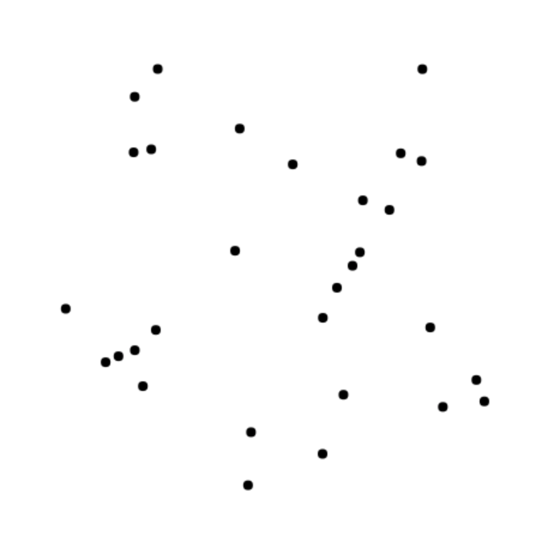

<!DOCTYPE html>
<html>
  <head>
    <title>Experiment 4</title>
    <script src="https://ajax.googleapis.com/ajax/libs/jquery/1.11.1/jquery.min.js"></script>
    <script src="jspsych-6.1.0/jspsych.js"></script>
    <script src="jspsych-6.1.0/plugins/jspsych-call-function.js"></script>
    <script src="jspsych-6.1.0/plugins/jspsych-external-html.js"></script>
    <script src="jspsych-6.1.0/plugins/jspsych-fullscreen.js"></script>
    <script src="jspsych-6.1.0/plugins/jspsych-html-button-response.js"></script>
    <script src="jspsych-6.1.0/plugins/jspsych-html-keyboard-response.js"></script>
    <script src="jspsych-6.1.0/plugins/jspsych-instructions.js"></script>
    <script src="jspsych-6.1.0/plugins/jspsych-rdk.js"></script>
    <script src="jspsych-6.1.0/plugins/jspsych-survey-html-form.js"></script>
    <script src="jspsych-6.1.0/plugins/jspsych-survey-likert.js"></script>
    <script src="jspsych-6.1.0/plugins/jspsych-survey-multi-choice.js"></script>
    <script src="jspsych-6.1.0/plugins/jspsych-survey-text.js"></script>
    <link href="jspsych-6.1.0/css/jspsych.css" rel="stylesheet" type="text/css"></link>
  </head>
  <body></body>
  <script>

  var timeline = [];

  // Consent
  var check_consent = function(elem) {
  	if ($('#consent_checkbox').is(':checked')) { return true; }
  	else {
  		alert("If you wish to participate, you must check the box.");
  		return false;
  	}
  	return false;
  };

  var consent_block = {
  	type: "external-html",
  	url: "consent.html",
  	cont_btn: "start",
  	check_fn: check_consent
  };
  timeline.push(consent_block);

  var comp_code = "8547XU9385A"

  var subjectId =  jsPsych.randomization.randomID(8);
  jsPsych.data.addProperties({
    subjectId: subjectId
  });

	var fullurl = window.location.href;
	jsPsych.data.addProperties({
		url: fullurl
	});

	var mturkId = jsPsych.data.getURLVariable('workerId');
	jsPsych.data.addProperties({
		mturkId: mturkId
	});

  // Fullscreen
  timeline.push({
    type: "fullscreen",
    message: "<p>This experiment must be completed in <b>full screen</b> mode to avoid distraction.</p>" +
  		"<p>You will automatically enter full screen mode when you press the button below.</p>" +
  		"<p>After entering full screen mode, please DO NOT exit, switch tabs, minimize, or adjust the browser for the remainder of the experiment.</p>"+
      "<p>To ensure quality data, we may reject your HIT if you are not engaging with the task.</p>",
    button_label: "Enter full screen mode",
  	fullscreen_mode: true
  });

  // Instructions
    var instructions_1 = {
      type: "instructions",
    	pages: [
      // page 1
      "<p> Welcome to the experiment!</p>"+
      "<p> In this experiment, you will complete <b>an estimation task</b>.</p>"+
      "<p> The entire experiment will take 30-40 minutes to complete.</p>"+
      "<p> CAUTION: Please read the following instructions carefully. There will be a comprehension check after the instructions.</p>"+
      "<p> If you fail the comprehension check, your participation will be terminated and you will only earn $0.5.</p>"+
      "<p> Click 'Next' to view the instructions.</p>",
      // page 2
      "<p> The estimation task includes <b>6 blocks</b> of trials in total. Each block contains 40 trials. </p>"+
      "<p> On each trial, you will see a random dot array. An example is shown below. </p>"+
      "<p> On some trials, the dot arrays appear for a longer time; on the other trials, they appear for a shorter time.</p>"+
      "<p> You will be asked to report your estimate of the number of dots in the dot array. You will have <b>10 seconds</b> to type in your estimate.</p>"+
      "<p> After that, you will be asked to report how confident you are that your estimate of the number of dots in the array captured the actual number of dots in the array.</p>"+
      "<p> You are encouraged to use the <b>full range of the confidence scale</b> when you report your confidence.</p>"+
      "</img>",
      // page 3
      "<p> You will earn $4.5 plus a possible $1 bonus for completing the entire experiment.</p>" +
      "<p> Whether you receive the $1 bonus depends on the <b>accuracy</b> of your estimates.</p>" +
      "<p> By the end of the experiment, one of the trials will be randomly chosen.</p>" +
      "<p> If your estimate on that chosen trial is within 2 of the true number of dots, you will win the bonus!</p>",
      // page 4
      "<p> If you have understood the task, click 'Next' to go to the comprehension check.</p>"+
      "<p> Otherwise, click 'Previous' to view the instructions again.</p>"
    ],
    show_clickable_nav: true,
    allow_backward: true,
    show_page_number: true
    };
    timeline.push(instructions_1);

// Comprehension questions
  var choices_1 = [
    "I have unlimited time to report my estimate.",
    "I need to wait for at least 10 seconds before reporting my estimate.",
    "There is a time limit. I only have 10 seconds to report my estimate."
  ];

  var choices_2 = [
    "Whether I win a bonus depends on the accuracy of my estimates.",
    "Whether I win a bonus depends on the speed I report my estimates.",
    "However I do in this task, I cannot earn a bonus."
  ];

  var choices_3 = [
    "only use the upper half of the confidence scale.",
    "use the full range of the confidence scale.",
    "avoid using the two ends of the confidence scale."
  ];

  var comprehension = {
      type: "survey-multi-choice",
      preamble: "<p> </p>"+
      "<p>The continue button is at the bottom of the page. You might need to scroll down to see it.</p>",
      questions: [
        {prompt: "1. Which of the following statements about the estimation task is correct?", options: choices_1, required: true},
        {prompt: "2. Which of the following statements about the estimation task is correct?", options: choices_2, required: true},
        {prompt: "3. When I report my confidence in my estimtes, I should", options: choices_3, required: true},
      ]
    };

  var fail = {
    type: "html-keyboard-response",
    stimulus: "<p> Oops! You did not pass the comprehension check. We are sorry to see you go.</p>"+
    "<p> You will receive $0.5 through a compensation HIT as compensation for your time.</p>"+
    "<p> Your completion code is 5tgad5. Please copy this code to Mechanical Turk to receive this compensation. You will not be be able to access this code after leaving this page!</p>"+
    "<p> No further action is necessary; you may now exit the window at any time.</p>",
    choices: jsPsych.NO_KEYS,
    response_ends_trial: true
  };

  var comprehension_fail = {
    timeline: [fail],
    conditional_function: function(){
      var ans1 = JSON.parse(jsPsych.data.getLastTrialData().values()[0].responses).Q0;
      var ans2 = JSON.parse(jsPsych.data.getLastTrialData().values()[0].responses).Q1;
      var ans3 = JSON.parse(jsPsych.data.getLastTrialData().values()[0].responses).Q2;
      if(ans1.includes('only') == false || ans2.includes('accuracy') == false || ans3.includes('full') == false){
        return true;
        }
        else {
          return false;
        }
      }
  };
  timeline.push(comprehension,comprehension_fail);

  var pass = {
    type: "html-button-response",
  	stimulus: "<p> Congratulations on passing the comprehension check!</p>"+
    "<p> The next <b>10 practice trials</b> will help you get familiar with the task.</p>"+
    "<p> Click 'Next' when you are ready to move on.</p>",
  choices: ['Next'],
  response_ends_trial: true
  };
  timeline.push(pass);

  // Set up
  var duration = [{duration: 100},{duration: 2000}];

  var fixation = {
    type: "html-keyboard-response",
    stimulus: "<div style='font-size:60px'>+</div>",
    choices: jsPsych.NO_KEYS,
    trial_duration: 500,
    on_finish: function(data) {
     jsPsych.data.addDataToLastTrial({
       exp_stage: "fixation"
     })
   }
 };

 var dot_array = {
   type: "rdk",
   number_of_dots: function(){
     var block = jsPsych.data.getLastTrialData().values()[0].Block;
     if (block == 0){
       return jsPsych.randomization.sampleWithoutReplacement(seq0,1)[0]
     } else {
       for (var b=0; b<6; b++) {
         if (block==b+1) {
           return  jsPsych.randomization.sampleWithoutReplacement(seq[b],1)[0]
         }
     }
     }
   },
   trial_duration: jsPsych.timelineVariable("duration"),
   dot_radius: 4,
   move_distance: 0,
   choices: jsPsych.NO_KEYS,
   correct_choice: jsPsych.NO_KEYS,
   dot_color: "black",
   background_color: "white",
   aperture_type: 1,
   reinsert_type: 1,
   aperture_width: 400,
   aperture_center_x: window.innerWidth*4.7/10,
   aperture_center_y: window.innerHeight*5.7/10,
   on_finish: function(data) {
    jsPsych.data.addDataToLastTrial({
      exp_stage: "stimulus",
      Stimulus: jsPsych.data.getLastTrialData().values()[0].number_of_dots,
      Duration: jsPsych.data.getLastTrialData().values()[0].trial_duration
    })
  }
 };

  var estimate = {
    type: "survey-html-form",
    preamble: "<p> What is your estimate of the number of dots in the array? </p>" + "<p>Please enter your response in the box below (numbers only). </p>",
    html: "<input name="estimate" type="number" required="true"></p>",
    background_color: "white",
    trial_duration: 10000,
    on_finish: function(data) {
     jsPsych.data.addDataToLastTrial({
       exp_stage: "estimate",
       Estimate: JSON.parse(jsPsych.data.getLastTrialData().values()[0].responses).estimate
     })
   }
  };

  var scale_conf = ["0: Guessed randomly", "1", "2", "3", "4", "5", "6", "7", "8", "9", "10: Very confident"];
  var confidence = {
    type: "survey-likert",
    questions: [
      {prompt: "<p> How confident are you that your estimate captured the actual number of dots in the array? </p>", name: 'confidence', labels: scale_conf, required: true},
    ],
    on_finish: function(data) {
     jsPsych.data.addDataToLastTrial({
       exp_stage: "confidence",
       Confidence: JSON.parse(jsPsych.data.getLastTrialData().values()[0].responses).confidence
     })
   }
  };

  // Training
  var seq0 = Array.from(Array(51), (_, i) => i+15)

  var instructions_2 = {
    type: "instructions",
    pages: [
    "<p> <b>Training Block</b></p>"+
    "<p> This training block will help you get familiar with the task.</p>"+
    "<p style='color:red;font-size:115%;'> The <b>average number of dots</b> on this block is </p>"+
    "<p style='color:red;font-size:150%;'> <b>40</b></p>"+
    "<p> On this block, you will get feedback after each trial to help you understand the task.</p>"+
    "<p> Click 'Next' to begin.</p>"
  ],
  show_clickable_nav: true
  };
  timeline.push(instructions_2);

  var training_feedback = {
    type: "html-button-response",
    stimulus: function(){
      var feedback_stim = jsPsych.data.get().last(3).values()[0].Stimulus;
      var answer = jsPsych.data.get().last(2).values()[0].Estimate;
      return ["<p>The stimulus on this trial was " +feedback_stim+ ", and your estimate of this stimulus was " +answer+ ".</p>" +
      "<p>You will only see feedback on this training block.</p>" +
      "<p> Click 'Continue' to go to the next trial.</p>"];
    },
    choices: ['Continue'],
    response_ends_trial: true,
    on_finish: function(data) {
     jsPsych.data.addDataToLastTrial({
       exp_stage: "feedback"
     })
   }
  };

  var training_procedure = {
    timeline: [fixation, dot_array, estimate, confidence,training_feedback],
    repetitions: 5,
    randomize_order: true,
    timeline_variables: duration,
    data: {exp_part:"training", Block: 0}
  }
  timeline.push(training_procedure);

  // Start
  var instructions_start = {
  type: "instructions",
  pages: [
      // page 1
      "<p> Good job! Training is done, now you're ready to start the experiment.</p>"+
      "<p> To complete the full experiment and save your data, you need to advance to the completion code screen at the end of the experiment.</p>"+
      "<p> If your data is not saved, we will not be able to accept your HIT.</p>",
      // page 2
      "<p> Please note that we check your data for accuracy.</p>"+
      "<p> If you respond randomly, or have too many misses, we have the right to exclude you from all future HITs by our group.</p>"+
      "<p> We appreciate you taking the time to complete the task to the best of your ability.</p>",
      // page 3
      "<p> The whole experiment will take 30-40 minutes to complete.</p>"+
      "<p> Each block contains 40 trials.</p>"+
      "<p> You can take a break after each block.</p>"+
      "<p> When you are ready to start the experiment, click 'Next.'</p>"
  ],
  show_clickable_nav: true,
  allow_backward: true,
  show_page_number: true
  };
  timeline.push(instructions_start);

  var array0 = Array.from(Array(21), (_, i) => i+30)
  var ave_stim = jsPsych.randomization.sampleWithoutReplacement(array0,6);
  var seq = [];
  for (var j=0; j<6; j++) {
    s = Array.from(Array(31), (_, i) => i+ave_stim[j]-15)
    seq.push(s)
  };

  for (var i = 0; i < 6; i++) {
    var instructions_block = {
      type: "instructions",
      pages: [
      "<p> <b>Block "+(i+1)+" out of 6</b></p>"+
      "<p style='color:red;font-size:115%;'> The <b>average number of dots</b> on this block is </p>"+
      "<p style='color:red;font-size:150%;'> <b>"+ave_stim[i]+"</b></p>"+
      "<p> You will NOT get feedback on your response.</p>"+
      "<p> Click 'Next' to begin.</p>"
    ],
    show_clickable_nav: true,
    };

    var test_procedure = {
      timeline: [fixation, dot_array, estimate, confidence],
      repetitions: 20,
      randomize_order: true,
      timeline_variables: duration,
      data: {exp_part:"block_"+(i+1), Block: i+1, Ave_stim: ave_stim[i]}
    }
    timeline.push(instructions_block, test_procedure);
  }

  // BONUS
  var array1 = [1,2,3,4,5,6];
  var a = jsPsych.randomization.sampleWithoutReplacement(array1, 1)[0]; // Block #
  var array2 = Array.from(Array(40), (_, i) => i + 1)
  var b = jsPsych.randomization.sampleWithoutReplacement(array2, 1)[0]; // Trial #

  var bonus_block = {
    type: "instructions",
    pages: function() {
      var stim_random = jsPsych.data.get().last(161*(7-a)).values()[4*(b-1)+2].Stimulus; // 161*(7-a): trials from Block a on.
      var estimate_random = jsPsych.data.get().last(161*(7-a)).values()[4*(b-1)+3].Estimate;
      jsPsych.data.addDataToLastTrial({randomBlock: a});
      jsPsych.data.addDataToLastTrial({randomTrial: b});
      jsPsych.data.addDataToLastTrial({stim_random: stim_random});
      jsPsych.data.addDataToLastTrial({estimate_random: estimate_random});
      var diff = stim_random - estimate_random;
      if (Math.abs(diff) <= 2){
        jsPsych.data.addDataToLastTrial({bonus: true});
        return ["<p>The trial we randomly picked was Trial " +b+ " of Block " +a+ ".</p>" +
        "<p>The true number of dots on this trial was " +stim_random+ ", and your estimate was " +estimate_random+ ".</p>" +
        "<p>CONGRATULATIONS! Your estimate was within 2 of the true number of dots; you won a bonus of <b>$1</b>.</p>" +
        "<p> IMPORTANT: Please <b>click 'Next'</b> to complete the experiment.</p>"];
      }
        else {
          jsPsych.data.addDataToLastTrial({bonus: false});
          return ["<p>The trial we randomly picked was Trial " +b+ " of Block " +a+ ".</p>" +
          "<p>The true number of dots on this trial was " +stim_random+ ", and your estimate was " +estimate_random+ ".</p>" +
          "<p>Oops! Your estimate was not within 2 of the true number of dots; we are sorry that you did not win a bonus.</p>"  +
          "<p> IMPORTANT: Please <b>click 'Next'</b> to complete the experiment.</p>"];
        }
    },
    show_clickable_nav: true
  };
  timeline.push(bonus_block);

  // Comments
  var end_comments = {
    type: "survey-text",
    questions: [{prompt: 'We\'re always trying to improve. Please let us know if you have any comments.</br> Click \'Submit Answer\' to finish the experiment.', value: 'Comments'}],
    button_label: "Submit Answer"
  };

  var end_instructions = {
    type: "html-button-response",
    stimulus: "<p> Thank you! You have now completed the entire experiment.</p>"+
    "<p> Please click 'Next' so that we can start saving your data.</p>",
  choices: ['Next'],
  response_ends_trial: true,
  on_finish: function(data) {
    var interaction_data = jsPsych.data.getInteractionData();
    data.screen = interaction_data.json();
  }
};
  timeline.push(end_comments, end_instructions);

// Save data to CSV
  function saveData_csv(name, data){
    var xhr = new XMLHttpRequest();
    xhr.open('POST', 'save_data.php');
    xhr.setRequestHeader('Content-Type', 'application/json');
    xhr.send(JSON.stringify({filename: name, filedata: data}));
  }

  // grab data before the end of the experiment
  timeline.push({
    type: "call-function",
    func: function(){ saveData_csv(subjectId + '_output', jsPsych.data.get().csv());
    },
    timing_post_trial: 0
  });

  //completion code
  timeline.push({
    type: "html-keyboard-response",
    stimulus: "<p> Your response has been recorded!</p>"+
    "<p> Your completion code is</p>" + comp_code +
    "<p> Please copy this code into Mechanical Turk. You will not be be able to access this code after leaving this page!</p>"+
    "<p> No further action is necessary; you may now exit the window at any time.</p>",
    choices: jsPsych.NO_KEYS,
    response_ends_trial: true
  });

  // start experiment
  jsPsych.init({
    timeline: timeline
  });


  </script>
</html>
